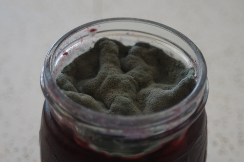

Hello "Tweetlings",
I've come to say I have successfully escaped the town I have lived in since 2016. If you decide to rent my old apartment, please note my landlord is crazy. She actually gifted me a very nice and huge wooden chest, unfortunately it was like a WEEK before I moved out and now Ryan has to deal with it.
Moving was a terrible experience, as always. I thought moving my dolls would be the worst, but this was not the case at all. They required special attention, but made all made it here with no damage. The actual worst: the kitchen.
The kitchen was terrible to pack, terrible to clean. Just all around AWFUL. I think next time I will simply remove the kitchen from my life. I hate cooking anyway.
I finished up two experiments I've had going. The first is a loaf of Franz brand honeywheat bread that expired last year on July 21. The bread had no mold at the time I threw it out. It was over a year past its expiration!!!
Second was a short experiment. I put some jam mold in the fridge while it was still young. Look at how big it got!! Ew!!!

I was really excited to connect with a doll community in my new temporary home! But this is actually my old home and there are still no doll girls here to my knowledge with the exception of a LV obsessed normie smart doll owner who I will not be contacting. This isn't a final destination so I won't be too sad about it.
I placed my dolls in the drawers of the bedroom dresser. All but Rio are short enough to fit. Poor Rio is laying with his head on his legs. 3 largies fit per drawer. I will have to buy one of these myself when I am a little less homeless.
I'm cleaning out my room and have some big life questions I've been asking myself. How many copies of Myst do I own? How many copies of Myst do I need? Will I ever play Myst? Much to think about.
I've skipped a few thrift hauls due to [redacted]. I did buy a dual monitor stand for $12.99 and a composite/s-video capture card for $.99. I hope you are all ready to watch my WiiU stream!!! I can now confirm that the WiiU will output analog over the Wii composite cables.
As any sane human would after quitting their job and moving to destination unknown, I bought a sewing machine. I've been thinking about this for a long time because my Viking machine can't do anything but straight stitch (and not always reliably). Let's pray this new machine is a good one!